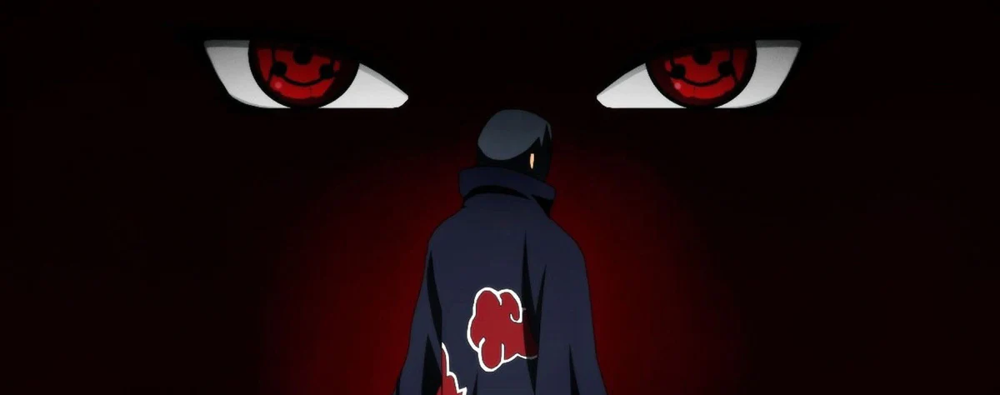
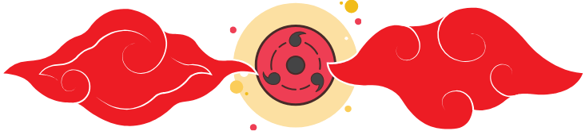

Curiosidade
Itachi era um pacifista
Apesar de ser um ninja extremamente poderoso, Itachi sempre preferiu evitar o confronto. Ele acreditava que a violência nunca é a resposta e que sempre há uma maneira de resolver as coisas de forma pacífica.
Clã
Poderoso, trágico, controverso
O clã Uchiha era um clã poderoso, mas sua história foi marcada pela tragédia e pela controvérsia. O clã inteiro foi dizimado por Itachi Uchiha
Usuário do Mangekyou Sharingan, pode usar técnicas poderosas, incluindo o Tsukuyomi Infinito e o Amaterasu Eterno

